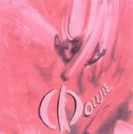

| Artist: | Phoenix |
| Title: | Renascent Phenomenon |
| Label: | Polumnia P015 |
| Length(s): | minutes |
| Year(s) of release: | 2003 |
| Month of review: | [02/2004] |
| 1) | Renascent Phenomenon | 1.13 |
| 2) | Death By Loving | 2.45 |
| 3) | Symptoms Of A Dawning Love | 4.07 |
| 4) | For A Change | 5.54 |
| 5) | Day After Night | 4.10 |
| 6) | In Between | 3.40 |
| 7) | Calamity | 4.55 |
| 8) | Hereafter | 5.04 |
| 9) | Direction Anywhere | 4.42 |
| 10) | To A Square | 4.30 |
| 11) | Operation: Weekly Friday's Obsession | 3.26 |
| 12) | It Makes Me Laugh | 2.30 |
| 13) | Until Eternity | 5.16 |
| 14) | I Am Noone | 2.59 |
| 15) | 2nd Fantasy's Movement | 2.55 |
| 16) | Ever So Incomplete | 2.52 |
On Symptoms Of A Dawning Love the hazy vocals continue to take the lead. The drum sound is a rather bare here, giving a more gothic impression on the whole. On For A Change, the vocals are taken over by Mathilde Roza. The organ has quite a proggy feel, the drums pound, but not too loudly. They do sound programmed. With Roza taking over vocal duty, do not think the music becomes less strange: it does not. I do have the feeling that the music tends more to the psychedelic now, and the keyboards and synths also give it a gloomy tinge of Tangerine Dream.
Hammill returns on Day After Night. The vocals of Hustings are quite a bit lower generally, and he does not change his voice that much between sentences, but the similarities are there. And the songs fit into PHs mold as well (that is, the PH of some time ago). The acoustic guitar figures quite prominently on the Phoenix tracks.
In Between is a slow ponderous and melodic track, quite typical for this album: slow acoustic come through, the vocals are full of longing and melodic, and the production is a hazy sheen over the music. The melodies are mainly formed by (the vocals and) the synths, which only add to the longing feel.
Calamity opens with repetitive almost inaudible...well what would it be? The vocals are slow are slurred, the drums sound real this time. The song is quite scary sounding at times, with a strong bass line in the middle and weird effects throughout.
Hereafter is one of the longer and more orchestral tracks. The drums sound a bit tinny again. I guess the best thing to do is to use them as least possible. The melodies are quite strong again, but subdued, so you'd have to listen well. After the soft toned Direction Anywhere, we arrive at To A Square, in which the Hammill influences are strongest. Hustings voice is not so powerful as that of Hammill, listen to that guitar for instance. A bit too much meandering here.
Operation: Weekly Friday's Obsession has a weird title. The programmed percussion sounds mechanical, but this time it seems to me on purpose. The organ reminds me a bit of the Stranglers. A hazy kind of song. It Makes Me Laugh is dominated by the gothic style monotonous vocals, somewhat along the lines of Gary Numan, but flatter. The sound effects are disorienting, lots of reverb.
Until Eternity on the other hand, is a very airey track, soft spoken with mechanical percussion. A weak track. I Am Noone continues this line of disjointed musical fragments. Well, at last the beat sets in, programmed as often happens. Again, I am not convinced. The music is a bit too straightforward and sounds uninspired.
2nd Fantasy's Movement includes a fragment of the music of Grieg. The vocal melody is a bit stronger again on this one and the melodic interlude by Grieg is also nice. Ever So Incomplete is the moody closer on piano, a bit in the desolate vein of Hammill's Again. A good closer.